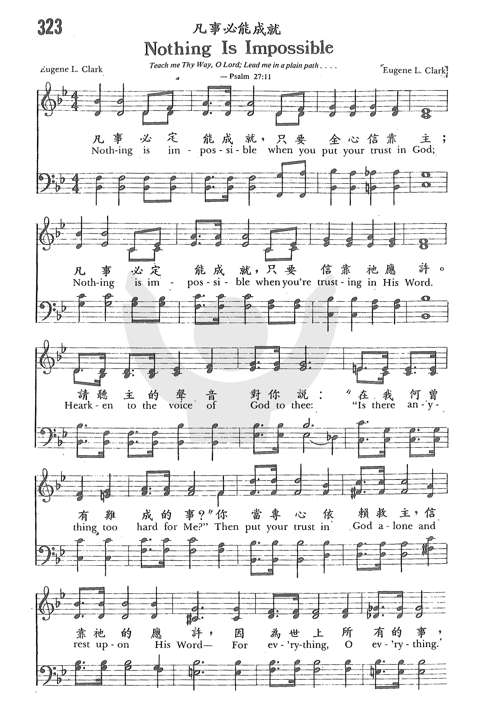
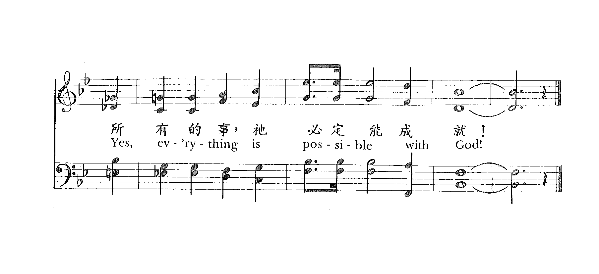
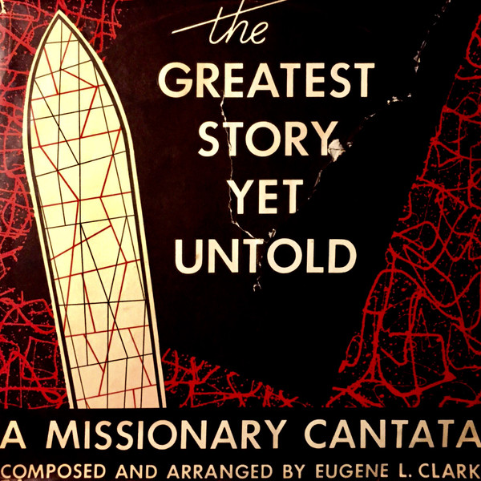

1244
Nothing Is Impossible _Eugene
L Clark
凡事必能成就
|
|
|
|
323 Nothing Is Impossible
Nothing is impossible when you put your trust in God.
Nothing is impossible when you’re trusting in His word.
Hearken to the voice of god to thee,
“Is there anything too hard for Me?”
Then put your trust in God alone and rest upon His Word
For everything, O everything,
Yes, everything is possible with God! |
“323p 凡事必定能成就 NOTHING IS IMPOSSIBLE
凡事必定能成就，只要全心信靠主；
凡事必定能成就，只要信靠祂應許。
請聽主的聲音對你說：
“在我何曾有難成的事？”
你當專心依賴救主，信靠祂的應許，
因為世上所有的事，所有的事，
祂必定能成就！
|
|
https://www.zanmeishige.com/tab/25691.html?songbook=1&index=323


|
|
|
|

-
-
- 我的負擔 My Task ( 曲：Eugene L Clark 1961 ; 詞：Oswald J Smith 1961 )
-
【我的負擔】專輯：青年新歌２作曲：Eugene L. Clark, 1961
1244
Nothing Is Impossible 凡事必能成就
|
Short Name: |
Eugene L. Clark |
|
Full Name: |
Clark, Eugene L. |
|
Birth Year: |
1925 |
|
Death Year: |
1982 |
Longtime music and radio
consultant for the Back to the Bible Broadcast.
Clark studied music at
Wheaton College and at Moody Bible Institute before joining Back to the
Bible in 1950 as an organist. He later served as the program's music
director, manager and producer. He was active in broadcasting until 1963,
when arthritis and blindness confined him to bed.
--Daniel Mahraun
(from Lincoln Journal Star, 1 Jul 1982, p.30, on newspapers.com)
Eugene Clark, organist, arranger and composer with Back to the Bible for
many years, has written hymns, choruses, and two missionary cantatas which
have been a blessing around the wolrd. (Taken from back cover of Samuel
Wall, Eugene Clark - Gospel Favorites by).
Tune Information
|
Title: |
[Nothing is impossible when you put your trust in God] |
|
Composer: |
Eugene L. Clark |
|
Incipit: |
11357 77356 66541 |
|
Copyright: |
©
1966, arr. 1975 by Good News Broadcasting Association |

Eugene L. Clark* – The Greatest Story Yet
Untold: A Missionary Cantata
奔向標杆 My Task
愛你的鄰舍日日更加多，協助迷失羊羔歸回正路，
不斷的禱告默想主尊貴，笑送夕陽落霞，
歡迎晚幕垂下，奔向標杆。
遵行真理如在暗中思明，由早到晚盡力為主使用，
竭力保守主榮在我心�堙A笑答恩主呼召，
歡迎為主奔跑，直往前行。
有一日與主在空中相遇，憑著信心完成一切事工，
將自己一切獻在主面前，在新耶路撒冷，
在那新天新地，接受冠冕。
這首詩歌告訴我們，要向「愛人和遵主真理」的標杆直跑。 第一、二節是雷沐德（Maude
Louise Ray）所作，第三節是畢克普牧師（F. H. Pickup）所作。 艾許福（E. L. Ashford）譜曲。 他們的生平都不詳。
另有一首「我的負擔」，英文歌名也是（My Task）是史奧華（Oswald J. Smith,見一月十一日）作詞，柯友勤
（Eugene L. Clark, 見二月廿日）譜曲。
歌詞如下：
我要背主耶穌十架，我樂意每日冒死；
若我能傳揚這故事：救主從天上降世。
主命我去傳揚福音，凡我腳蹤所到處；
使世界得聞這故事，卸罪擔得蒙救贖。
千萬人未聽聞福音，千萬人不知主名；
我必需對他們傳講，免得我受主責備。
（副歌）
我要傳揚這快樂福音，到各處黑暗地方；
對人人為主作見證，指引罪人得亮光。
這二首詩歌合起來，是每一個基督徒應有的使命，讓我們謹記而遵行，甘願背負十架。 走筆至此，憶及許多聖詩集中都有一首古老的詩歌，「豈能讓主獨背十字架？」（Must
Jesus Bear the Cross Alone？）其歌詞如下：
豈能讓主獨背十架，世人竟得安祥？
信徒都當背負十架，當以主為榜樣。
我願獻身背我十架，一生總不捨下，
忠心到底直到天家，主必親自接納。
榮耀寶架榮耀冠冕！榮耀的復活日！
天使前來接我升天，在彼永享安息。
 (請點耳機收聽)
(請點耳機收聽)
這首詩的作者是謝伯達（Thomas Shepherd,
1665-1739）在1693年所作，在當年是一首非常受歡迎的聖詩。謝伯達和他的父親都是英國非國教的牧師，後來謝伯達退出聖公會，他開始在窮鄉僻壤的一穀倉中講道；七年後，他們才蓋了一間小教堂。
謝伯達習慣在講道結束時，唱一首反省的歌。
他寫這首詩用來回應他的講題，原作是豈能讓西門獨背十字架，後來約翰衛斯理將「西門」改成「主」。目前詩集都採用美國作曲家艾倫（George Nelson
Allen, 1812-1877）在1844年的曲譜。
中英文聖詩集參考
英文歌名 My
Task
聖詩 151
讚美 426
青年聖歌III 87
英文歌名 My
Task -Smith
校園詩歌I
231A
英文歌名 Must
Jesus Bear the Cross Alone?
頌主新歌(中英雙語) 482
讚美詩(新編) 338
http://www.hymncompanions.org/Oct/30/stream.php